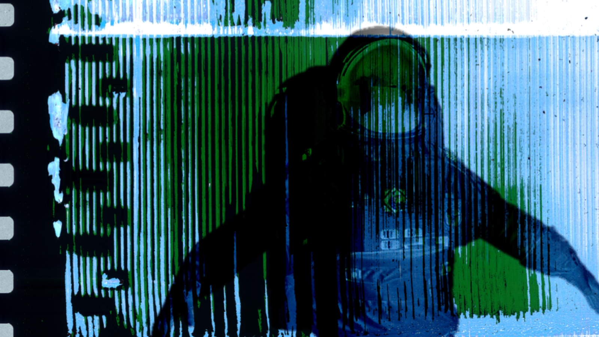
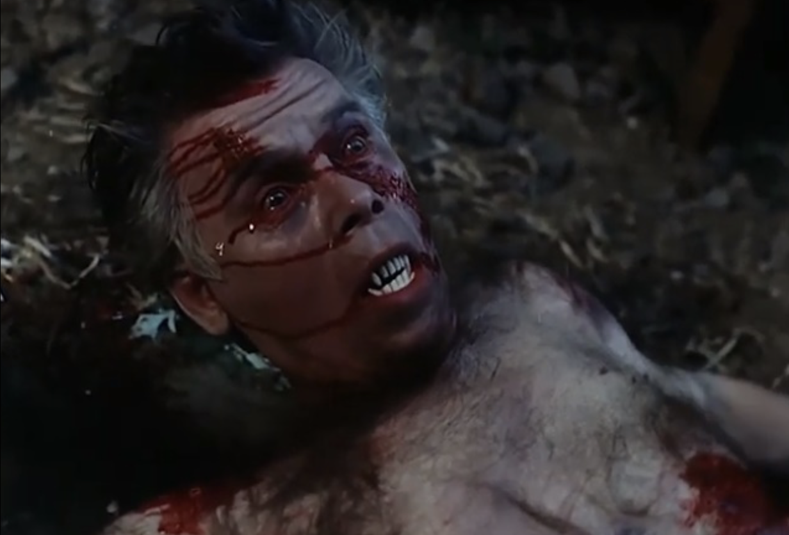
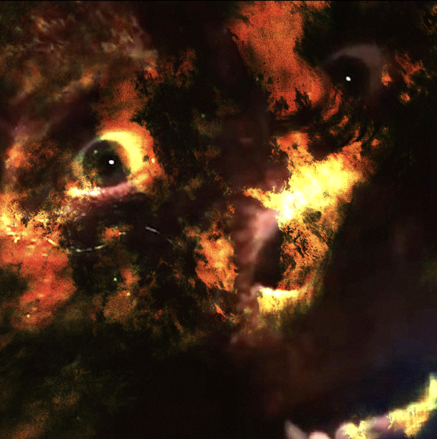
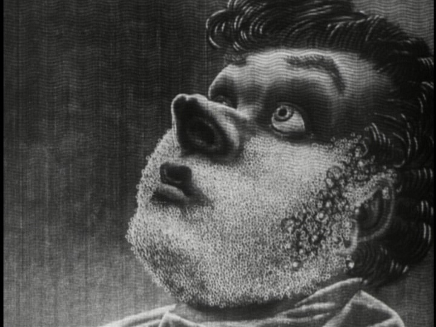

Lost Movies From Outer Space
"two movie maniacs from distant parts of Russia..."
by: Gleb Segeda
02/23/2023, featured in Issue Two: Depths of Cinema
From Outer Space was originally created by two movie maniacs from distant parts of Russia as an ordinary fan blog for cult horror, science fiction and fantasy films. Gradually, the content grew out of control and became increasingly obscene and obscure. From Outer Space is a Russian-language project, therefore we are especially attracted to unusual films from the USSR and strange post- Soviet cinema.
It was a hectic time of new ideas and opportunity. With the collapse of the Soviet Union, filmmakers gained freedom to express their ideas. Cinema became more creative and daring, more liberated, but also restrained by cheaper budgets. Some films screened only in a couple of cinemas. Many were shot for video format. Creators deliberately refused to distribute their films and sometimes even destroyed them out of shame. Many of these films are still considered irretrievably lost. Sometimes there aren’t records of frames or accurate information, only a title. All kinds of legends revolve around such films: experiments ahead of their time, scandals around episodes with blood and nudity, drunken debauchery, criminal showdowns on the set.
This is exactly what happened with «The Hour of the Werewolf», a film among the first and last late Soviet horrors. Notes from old magazines («Soviet Screen») and the memories of its rare viewers have survived. Many were lauded by the scenes of the protagonist’s transformation from a human into a werewolf. The director later told us that the crew originally planned to use excellent latex makeup from Thailand. But the postal service could not deliver it to the USSR. Therefore the actor embodied a monster with almost no makeup and the desired effect was achieved mainly through acting according to the Stanislavsky system.
We queried all possible local archives and funds, including Ukrainian ones (due to the film’s Odessa origins), about where we could find a copy. Eventually, we found the director: Igor Shevchenko, who did not even imagine that his film might be of interest to anyone today. The creator did not have a copy of the film, but he promised to help us in our search. With the support of the director and cinematographer of «The Hour of the Werewolf», we contacted the Gosfilmofond of Russia and received the long-awaited film, which was digitized and restored. For those who found the time of Perestroika, this was a miracle!
Image from The Hour of the Werewolf
But even more mysterious and confusing was the story of the search for the legendary film «AntiFaust». Some described it as outlandish mystical avant-garde like something from Buñuel, while others called it the second «Mister Designer» — another then-cult Russian movie forgotten for thirty years.
The story of this film began in 1990 when Georg Friesen, a young German from Hanover, came to Russia and enrolled in filmmaker courses at VGIK. In 1993 he directed the film «AntiFaust» — a romantic extravaganza, saturated with non-standard visuals and an instantly immersive soundtrack. Friesen was clearly inspired by the films of Friedrich Murnau and Peter Greenaway. As intended, the film stood out from the background of stereotypical 90s Russian film production.
Friesen returned to Germany shortly after the premiere. «AntiFaust» remained undistributed and unreleased. The film disappeared, becoming an unattainable artifact. The inhabitants of the forums composed legends about it, which was supplemented by small bits of information from Soviet film magazines.
The search for «AntiFaust» has continued over the years. None of those who took part in the filming had a copy or information about where it could be found. It was clear to everyone that the director himself was the key figure in this story, but absolutely nothing was known about his fate either.
After checking all possible and impossible options, addresses, sites and social networks, my friend and I, on behalf of the From Outer Space community, were able to find a man named Andreas. He communicated with Georg when their children went to the same school. Fortunately, Andreas kept a phone number for the mysterious director and, after a while, we were able to contact him!
Friesen regretted that the only Betacam copy of «AntiFaust» was lost in a flood in the basement of his house. The director said that the film had two camera operators. Perhaps a copy was kept by the second one?
The second cameraman was Dmitry Ermakov. We found his friends, who helped us contact him and find out if he had the last copy of «AntiFaust» in existence. All these years Dmitry had kept that VHS in his collection as he considered the film to be a failure. A careless re-recording of some 90s show could have thrown «AntiFaust» into the abyss of oblivion. But now, almost thirty years later, people can watch this film for the first time!
It’s amazing how many more stories there are about lost films. One of the most controversial stories is the one about the adaptation of «The Dwarf Nose», a fairy tale by Wilhelm Hauff. This film was shown on Soviet television in the 1980s and made an eerie impression on viewers with its gloomy and oppressive atmosphere. Eyewitnesses claim that frighteningly realistic makeup was used in the film and the mystical atmosphere of the plot was frightening to the core.
Subcultures of seekers have gathered around this film. While one group is looking for some unknown TV show, another is sure that the missing «The Dwarf Nose» is a 1975 Bulgarian teleplay. Others believe that the film was shot on Leningrad television and is stored in their archives. Everyone else is convinced of the Mandela Effect. For them this film does not even exist and that all eyewitness memories of the film are false.
Image from The Nose (1963)
Earlier this year, we contacted the Austrian broadcaster ORF about an unknown film adaptation called «Zwerg Nase» («The Dwarf Nose», 1963). It turned out that it was shown on TV only twice in the 1960s and then lay on the shelf. We hoped that this would be that legendary film. But in fact it was an ordinary TV play, filmed among cardboard background sets on black and white film. Perhaps one day this mysterious film will be found.
Of course, this is only a small part of our search. We have also started to delve into Polish animation from the 60s, cheap science fiction from the 70s, selected trash from the 80s, and dark Russian exploitation from the 90s. As always, we remain fascinated by stories about films that were never filmed and lost films. Along with expanding the arsenal of our finds – forbidden Yakut mystical horrors, surrealism from Azerbaijan, unknown silent films of the 1920s, and so on – we are also engaged in the restoration of cult Russian films from the 90s, many of which have only survived on bad VHS such as «Dina» (1990), «Thirst for Passion» (1991), and «Contact» (1992).
We communicate with collectors of films and VHS, write to small regional archives and funds and find directors, cameramen and actors of forgotten films of the recent past. Some might think that these films are no longer needed and are not of interest. Yet every time we dig into these bowels of cinematic abyss, we discover new, forgotten pearls. Our goal is to retrieve it from the very depths of the forgotten archives.
Believe me, there are so many pearls!